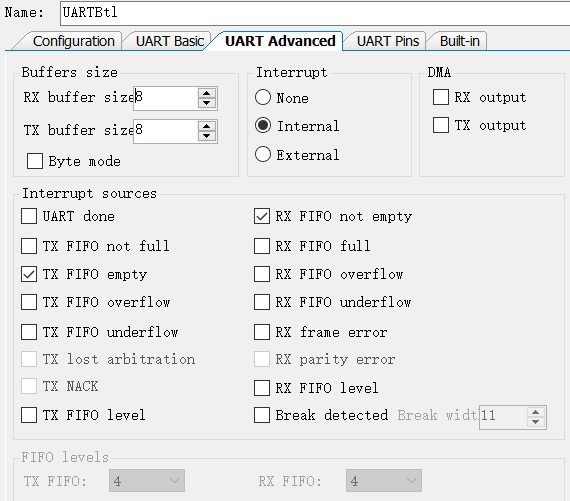
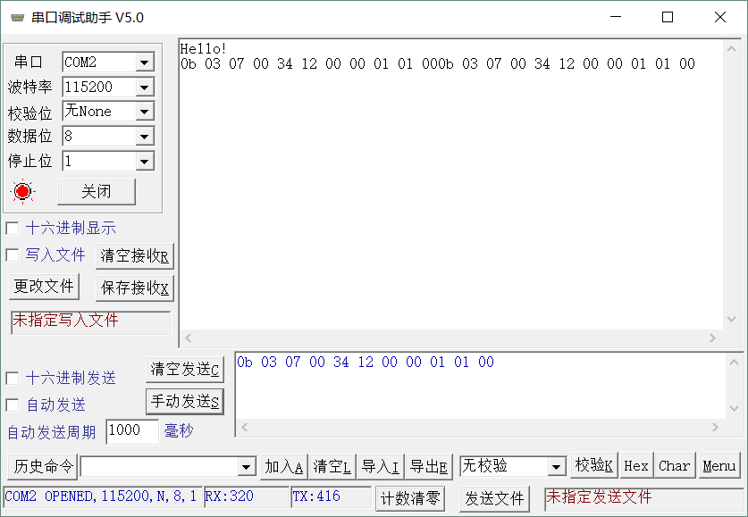

PSoC4 SCB 之 UART
参考文档：
- Infineon-Component_PSoC_4_SCB_V2.0-Software Module Datasheets-v04_00-EN
- Infineon-PSoC_4100S_Family_PSoC_4_Registers_Technical_Reference_Manual_(TRM)-AdditionalTechnicalInformation-v04_00-EN
SCB -> UART
PSoC4100S Plus拥有五个运行时可重新配置的独立串行通信模块（SCB），可配置为I2C、SPI或UART功能。
UART模式：运行速度高达1Mbps的全功能UART，支持汽车单线接口LIN、红外接口（IrDA）和智能卡（ISO7816）协议。此外还支持9位多处理器模式，此模式允许寻址连接到通用RX和TX线的外设。支持通用UART功能，如奇偶校验、中断检测以及帧错误。一个8字节深度的FIFO。
在PSoC Creator中创建新工程，TopDesign中添加UART，并重命名为UARTBtl （为UART Bootloader用），然后配置其参数如下：

主要是串口收发中断的配置：使能Tx FIFO empty 和 RX FIFO not empty 中断，FIFO buffer设置为8，这样发送时一次可以填入8个字节以减小进中断的频次。
接收中断很遗憾不支持空闲中断，只能配合定时器中断实现超时成帧判断。
（如果支持空闲中断可以配合RX FIFO Level使用以降低进接收中断的频次，比如设置为4字节，如果接收缓冲区中有3个字节的话，就没法产生中断了..）
完成配置后开始撸代码，老规矩，套我之前的串口收发处理 – 既然支持五个SCB自然不能写五套串口收发处理代码，那太啰嗦了。
先定义UART的数据结构：
typedef void (func)(uint8_t);
typedef uint8_t (funcRt)(void);
typedef struct
{
uint8_t * rbuf; //接收缓冲区
uint16_t rwr;
uint16_t rlen;
uint8_t rframe; //接收成帧标志
uint8_t rtmr; //接收超时timer
const uint8_t * sbuf; //发送缓冲区
uint16_t slen; //发送长度
uint16_t swr;
func * setSendIrqEn; //发送FIFO空中断使能设置
func * sendDat; //发送一个字节
funcRt * sFifoNotFull; //发送Fifo没空判断，1：Not Full
}strUart;
串口中断服务处理函数：
CY_ISR(UARTBtl_RXTXINT) //uart irq proc
{
//----------TX IRQ, Fifo empty
uint32 inter_resource = UARTBtl_GetTxInterruptSourceMasked();
uint8_t rdat = 0;
if (inter_resource & UARTBtl_INTR_TX_EMPTY)
{
UARTBtl_ClearTxInterruptSource(UARTBtl_INTR_TX_EMPTY);
bsp_uart_send_irq(&uartBtl);
}
//----------RX IRQ, Fifo not empty, recv bytes
inter_resource = UARTBtl_GetRxInterruptSourceMasked();
if (inter_resource & UARTBtl_INTR_RX_NOT_EMPTY)
{
do
{
rdat = UARTBtl_SpiUartReadRxData();
bsp_uart_recv_dat(&uartBtl,rdat);
} while (UARTBtl_SpiUartGetRxBufferSize() != 0);
UARTBtl_ClearRxInterruptSource(UARTBtl_INTR_RX_NOT_EMPTY);
}
}
串口发送相关函数配置：
//uart send fifo empty irq
void bsp_uart_send_irq(strUart * uart)
{
if(uart->swr >= uart->slen) //uart send done!
{
uart->swr = 0;
uart->slen = 0;
uart->setSendIrqEn(0); //disable send IRQ after send done!
return;
}
//如果fifo没满并且发送缓冲区中有数据就一直往里填
while(uart->sFifoNotFull())
{
if(uart->swr < uart->slen)
{
uart->sendDat(uart->sbuf[uart->swr]);
uart->swr++;
}
else
{
break;
}
}
}
// 发送函数，当数据填入缓冲区后调用，使能FIFO空中断，进入中断后会调用上面函数处理
uint8_t bsp_uart_send(strUart * uart,uint16_t len)
{
uart->slen = len;
uart->swr = 0;
uart->setSendIrqEn(1);
}
//获取发送缓冲区指针，向发送缓冲区中填数时需要等待发送完成
uint8_t * bsp_uart_get_sbuf(strUart * uart)
{
while(uart->slen != 0); //等待上次发送完成
return (uart->sbuf);
}串口接收处理：
void bsp_uart_recv_dat(strUart * uart, uint8_t dat)
{
uart->rbuf[uart->rwr] = dat;
uart->rwr++;
if(uart->rwr >= U_RX_MAX)
{
uart->rwr = 0;
}
uart->rtmr = TMR_OVER;
}
void bsp_uart_tmr_over_check(strUart * uart)
{
if(uart->rtmr)
{
uart->rtmr--;
if(uart->rtmr == 0)
{
uart->rframe = 1;
}
}
}
接收处理大体流程如下：接收成帧的判断：
接收中断中将接收的数据放入接收缓冲区中，并设置接收超时时间，9600波特率接收一个字节的时间约为1ms，设置超时时间为3ms或5ms，超时后即认为接收成帧。
除非发送方发送时不是连续发送的（比如linux系统的设备，曾遇过发送一帧数据时，分了几段来发，后来把超时时间间隔设大才OK）
串口中间层代码：
void uartBtlEnSendIrq(uint8_t en)
{
// en ? UARTBtl_ENABLE_INTR_TX(UARTBtl_INTR_TX_EMPTY) : UARTBtl_DISABLE_INTR_TX(UARTBtl_INTR_TX_EMPTY);
if(en)
{
UARTBtl_ENABLE_INTR_TX(UARTBtl_INTR_TX_EMPTY);
}
else
{
UARTBtl_DISABLE_INTR_TX(UARTBtl_INTR_TX_EMPTY);
}
}
void uartBtlSendDat(uint8_t dat)
{
UARTBtl_TX_FIFO_WR_REG = dat;
}
uint8_t uartBtlSendFifoNotFullChk()
{
return (UARTBtl_SPI_UART_FIFO_SIZE != UARTBtl_GET_TX_FIFO_ENTRIES) ? 1 : 0;
}
串口初始化代码：
void uartBtlDataInit()
{
memset(&uartBtl,0,sizeof(uartBtl));
uartBtl.rbuf = uartBtlRbuf;
uartBtl.sbuf = uartBtlSbuf;
uartBtl.setSendIrqEn = uartBtlEnSendIrq;
uartBtl.sendDat = uartBtlSendDat;
uartBtl.sFifoNotFull = uartBtlSendFifoNotFullChk;
}
void uartBtlInit()
{
uartBtlDataInit();
UARTBtl_Start();
UARTBtl_SetCustomInterruptHandler(UARTBtl_RXTXINT); //UART_CHECKPART_RXTXINT
UARTBtl_DISABLE_INTR_TX(UARTBtl_INTR_TX_EMPTY); //disable Tx IRQ
UARTBtl_ENABLE_INTR_RX(UARTBtl_INTR_RX_NOT_EMPTY); //enable Rx IRQ
}串口收发测试：
void uartBtlSendTest()
{
uint16_t j = 0;
uint8_t * sbuf = bsp_uart_get_sbuf(&uartBtl);
sbuf[j++] = 'H';
sbuf[j++] = 'e';
sbuf[j++] = 'l';
sbuf[j++] = 'l';
sbuf[j++] = 'o';
sbuf[j++] = '!';
sbuf[j++] = '\r';
sbuf[j++] = '\n';
bsp_uart_send(&uartBtl,j);
}
void uartBtlSendBuf(uint8_t * buf,uint16_t len)
{
uint8_t * sbuf = bsp_uart_get_sbuf(&uartBtl);
memcpy(sbuf,buf,len);
bsp_uart_send(&uartBtl,len);
}
void task_uartBtl_recv()
{
if(uartBtl.rframe)
{
uartBtl.rframe = 0;
//简单测试：将收到的数据发送回去
uartBtlSendBuf(uartBtl.rbuf,uartBtl.rwr );
uartBtl.rwr = 0;
}
}打开串口调试助手，收发测试：（与仿真器串口相连的UART PIN： P7_0 - U_RX，P7_1 - T_RX）

程序中放了个一个uart、一个led、一个timer，编译后占用：
Flash used: 3510 of 131072 bytes (2.7%).
SRAM used: 3104 of 16384 bytes (18.9%). Stack: 2048 bytes. Heap: 128 bytes.
如果使用串口Bootloader，还需要精简代码才行，不能超过4KB，继续努力~